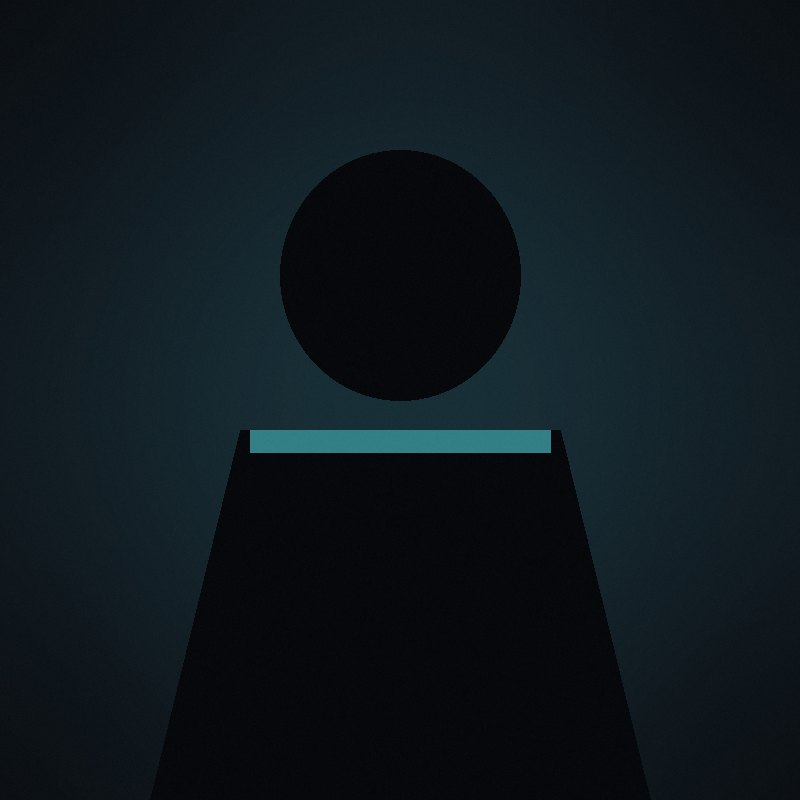

Perfil
Quem ganha com o silêncio
Três empresas, uma janela de sete horas.
01 · Paleta fechada
Cada tema define fundo, texto, acento, acento 2, superfície e linha. Nenhum site escreve um hex novo.
02 · Rampa de texto
20 tamanhos, de 32 a 150 ink. Corpo 46 · secção 72 · artigo 96 · header 110 · hero 150.
03 · Ações e etiquetas
Button é um link com caixa. Não há botão com estado, nem onClick.
04 · Cartões
Card (conteúdo) e ProductCard (preço em eddies) — a mesma grelha de 3 colunas em desktop.


05 · Dados e listas
Table (cabeçalho em acento, linhas alternadas) e BulletList (marcador quadrado de acento).
06 · Faixa e rodapé